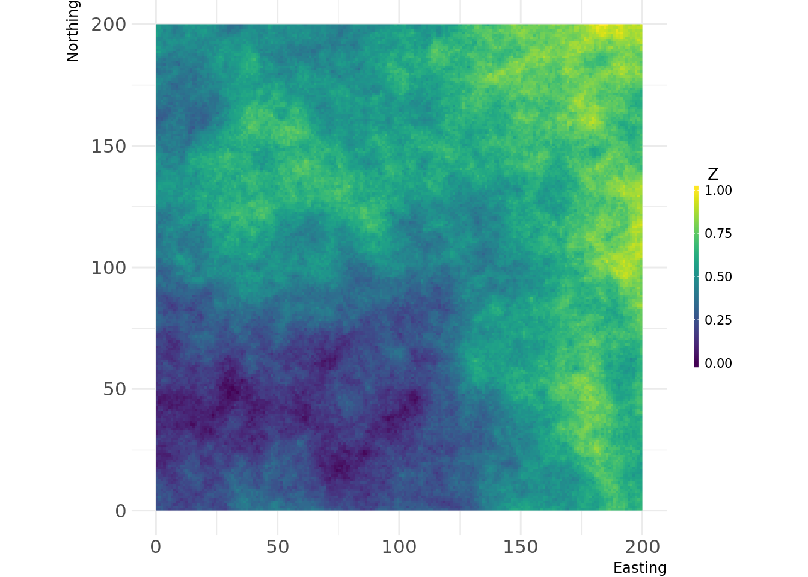
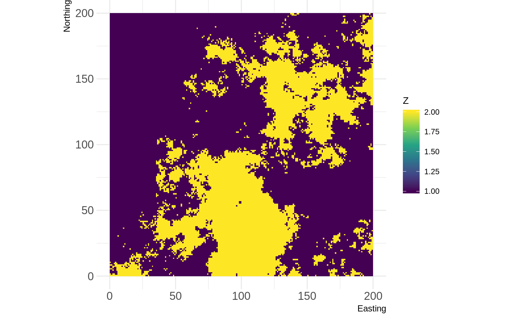
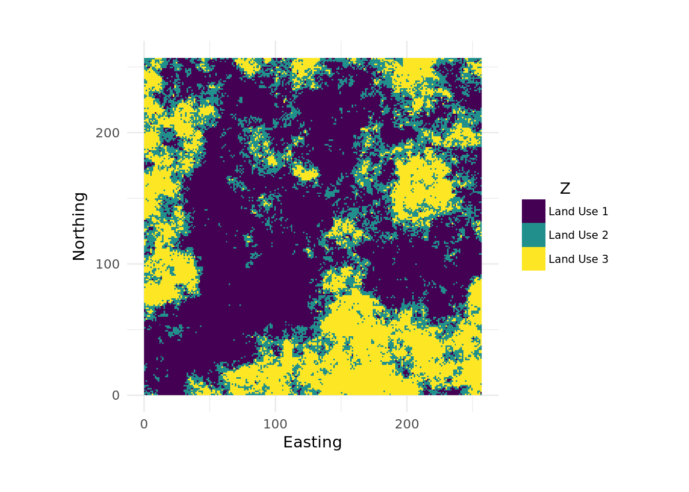
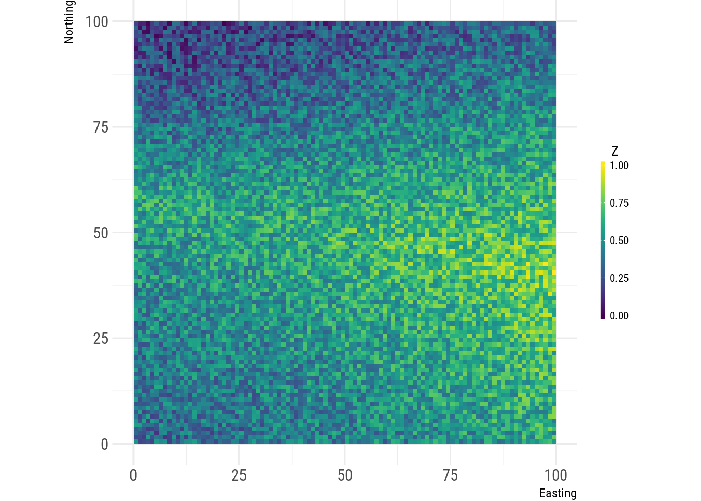

landscapetools provides utility functions to work with landscape data (raster* Objects).
The following functions are implemented:
Utilities:
util_binarize: Binarize continuous raster values, if > 1 breaks are given, return a RasterBrick.util_classify: Classify a raster into proportions based upon a vector of class weightings.util_merge: Merge a primary raster with other rasters weighted by scaling factors.util_raster2tibble, util_tibble2raster: Coerce raster* objects to tibbles and vice versa.util_rescale: Linearly rescale element values in a raster to a range between 0 and 1.
Visualization
util_plot: Plot a Raster* object with the landscapetools default theme (as ggplot).util_facetplot: Plot multiple raster (RasterStack, -brick or list of raster) side by side as facets.
Themes:
theme_nlm, theme_nlm_grey: Opinionated ggplot2 theme to visualize raster (continuous data).theme_nlm_discrete, theme_nlm_grey_discrete: Opinionated ggplot2 theme to visualize raster (discrete data).theme_faceplot: Opinionated ggplot2 theme to visualize raster in a facet wrap.util_import_roboto_condensed: Import Roboto Condensed font for theme_nlm.
Installation
You can install the development version from GitHub with:
Usage
library(NLMR)
library(landscapetools)
# Create an artificial landscape
nlm_raster <- nlm_fbm(ncol = 200, nrow = 200, fract_dim = 0.8)
util_plot(nlm_raster)
Utilities
Binarize
# Binarize the map into habitat and matrix
binarized_raster <- util_binarize(nlm_raster, breaks = 0.31415)
util_plot(binarized_raster, discrete = TRUE)
Classify
# Classify the map into land uses
classified_raster <- util_classify(nlm_raster,
n = 3,
level_names = c("Land Use 1", "Land Use 2", "Land Use 3"))
util_plot(classified_raster, discrete = TRUE)
Merge
# Create a primary and two secondary maps
prim <- nlm_edgegradient(ncol = 100, nrow = 100)
sec1 <- nlm_distancegradient(ncol = 100, nrow = 100,
origin = c(10, 10, 10, 10))
sec2 <- nlm_random(ncol = 100, nrow = 100)
# Merge all maps into one
merg <- util_merge(prim, c(sec1, sec2), scalingfactor = 1)
# Plot an overview
merge_vis <- list(
"1) Primary" = prim,
"2) Secondary 1" = sec1,
"3) Secondary 2" = sec2,
"4) Result" = merg
)
util_facetplot(merge_vis)
See also
In the examples above we make heavy use of the NLMR package. Both packages were developed together until we split them into pure landscape functionality and utility tools. If you are interested in generating neutral landscapes via a multitude of available algorithms take a closer look at the NLMR package.
Meta
- Please report any issues or bugs.
- License: GPL3
- Get citation information for
landscapetoolsin R doingcitation(package = 'landscapetools') - We are very open to contributions - if you are interested check Contributing.
- Please note that this project is released with a Contributor Code of Conduct. By participating in this project you agree to abide by its terms.